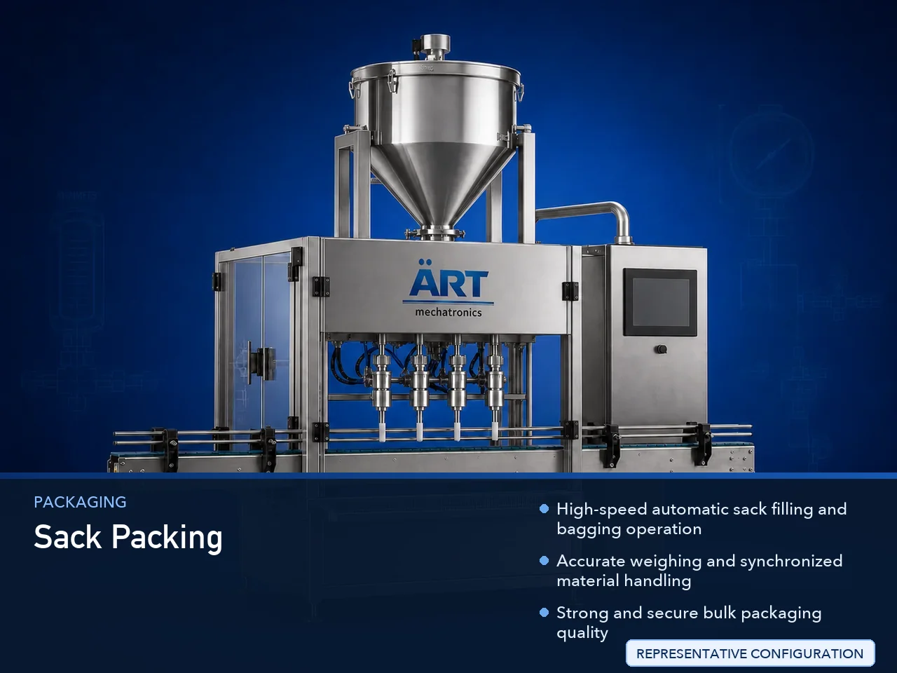

Sack Packing Machine (Automatic Sack Filling & Bagging System)
A Sack Packing Machine, also known as a Sack Filling Machine, Bagging Machine, Jumbo Bag Filling Machine, or Automatic Sack Bagging System, is an advanced industrial packaging solution designed for automatic weighing, filling, dosing, bag positioning, sack clamping, sealing, stitching, conveying,…

About the Sack Packing
Sack packing systems are widely used for: ✔ Grain sack packing ✔ Flour bagging operations ✔ Cement sack filling ✔ Chemical bagging applications ✔ Fertilizer sack packaging ✔ Animal feed bagging ✔ Mineral powder sack filling ✔ Bulk material packaging operations
The machine improves: ✔ Filling accuracy ✔ Packaging speed ✔ Bulk handling efficiency ✔ Product hygiene ✔ Labor productivity ✔ Packaging consistency ✔ Dispatch efficiency
Industrial sack packing machines use: ✔ Servo synchronized weighing systems ✔ Automatic bag clamping systems ✔ PLC and HMI automation controls ✔ Precision dosing mechanisms ✔ Automatic conveying and stitching systems
to automatically fill and seal sacks with superior weighing accuracy and high production efficiency.
Sack packing machines are widely used in industries such as:
Food processing industries Flour industries Rice industries Chemical industries Cement industries Mineral industries Fertilizer industries Animal feed industries Construction material industries
where high-speed bulk packaging and accurate weighing operations are essential.
The machine is highly suitable for: ✔ Flour sack packing ✔ Grain bagging ✔ Cement sack filling ✔ Chemical powder packaging ✔ Feed bagging systems ✔ Fertilizer packaging ✔ Mineral powder bagging
ART Mechatronics offers high-performance sack packing machines, engineered for continuous industrial operation, accurate weighing performance, durable construction, and reliable long-term packaging automation.
Working Principle of Sack Packing Machine
- 1. Empty Sack Feeding Empty sacks are manually or automatically positioned into bag clamping section.
- 2. Product Weighing Process Machine automatically weighs product using precision load cell and dosing systems.
Servo synchronization ensures accurate weighing and smooth material flow.
- 3. Sack Filling Operation Machine handles: ✔ Flour ✔ Grains ✔ Cement ✔ Fertilizers ✔ Minerals ✔ Chemicals ✔ Animal feed
accurately and continuously.
- 4. Sack Sealing & Stitching Process Machine performs: Bag stitching Heat sealing Valve sealing Bag closing operations
for secure transportation and storage packaging quality.
- 5. Conveyor & Dispatch Integration Filled sacks transferred automatically through: Conveyors Bag flatteners Check weighers Metal detectors Palletizing systems
- 6. Finished Sack Discharge Finished sacks discharged automatically for: Warehouse storage Truck loading Dispatch operations Export shipment handling
Types of Sack Packing Machines
- 1. Open Mouth Sack Packing Machine Designed for: ✔ Grain, flour, and feed bagging applications
- 2. Valve Bag Filling Machine Suitable for: ✔ Cement and powder packaging systems
- 3. Jumbo Bag Filling Machine Uses: ✔ Bulk material and FIBC packaging applications
- 4. Automatic Bagging Machine Designed for: ✔ High-speed industrial bulk packaging systems
- 5. Servo Driven Sack Packing Machine Suitable for: ✔ Precision high-speed weighing and filling operations
- 6. Fully Automatic Sack Packing System Designed for: ✔ Complete industrial bagging automation lines
Industries Using Sack Packing Machines
🌾 Grain & Flour Industry Rice, wheat, flour, pulses, and cereal sack packaging systems. ⚗️ Chemical Industry Chemical powder, granules, pigments, and industrial material bagging systems. 🏗️ Cement & Construction Industry Cement, mortar, gypsum, fly ash, and construction material sack packaging systems. 🌱 Fertilizer Industry Fertilizer granule and agricultural product bagging systems. 🐄 Animal Feed Industry Cattle feed, poultry feed, fish feed, and animal nutrition bagging systems. ⛏️ Mineral Industry Mineral powder, silica, calcium carbonate, and mining material sack packaging systems.
Features & Advantages
✔ High-speed automatic sack filling and bagging operation ✔ Accurate weighing and synchronized material handling ✔ Strong and secure bulk packaging quality ✔ PLC and servo automation control systems ✔ Improves dispatch and warehouse efficiency ✔ Reduces labor dependency and material wastage ✔ Supports multiple sack sizes and product formats ✔ Reliable long-term industrial performance ✔ Smooth and continuous bulk packaging operation
Technical Highlights
Machine Type: Automatic sack packing machine Industrial bagging machine Bulk material filling system Packaging Material: PP woven sacks Paper sacks Valve bags FIBC jumbo bags Filling Integration: Load cell weighing systems Screw feeders Gravity feeders Belt feeding systems Features: PLC control system Servo synchronization Touchscreen HMI Automatic bag clamping Conveyor integration Sealing Type: Bag stitching Heat sealing Valve sealing Automation: Semi-automatic Fully automatic industrial systems
Turnkey Sack Packing Solutions
ART Mechatronics offers: Complete sack packing systems Automatic bulk bagging solutions Packaging automation integration systems Conveyor synchronization systems Installation & commissioning After-sales service & AMC
Why Choose Art Mechatronics
Expertise in industrial packaging and automation systems Customized sack packing solutions for multiple industries High-performance and durable bagging technology Advanced PLC and servo automation systems Proven industrial packaging performance across sectors
Applications
Flour Mills Rice Processing Plants Cement Manufacturing Plants Chemical Industries Fertilizer Manufacturing Units Animal Feed Industries
Get pricing & specs for the Sack Packing
Share the product, target capacity, current process and plant location. These details help our engineers discuss the right machine or line configuration.
One partner, from design to start-up
ART Mechatronics designs, manufactures, installs and commissions your Sack Packing solution with regional presence in India, UAE and Thailand.